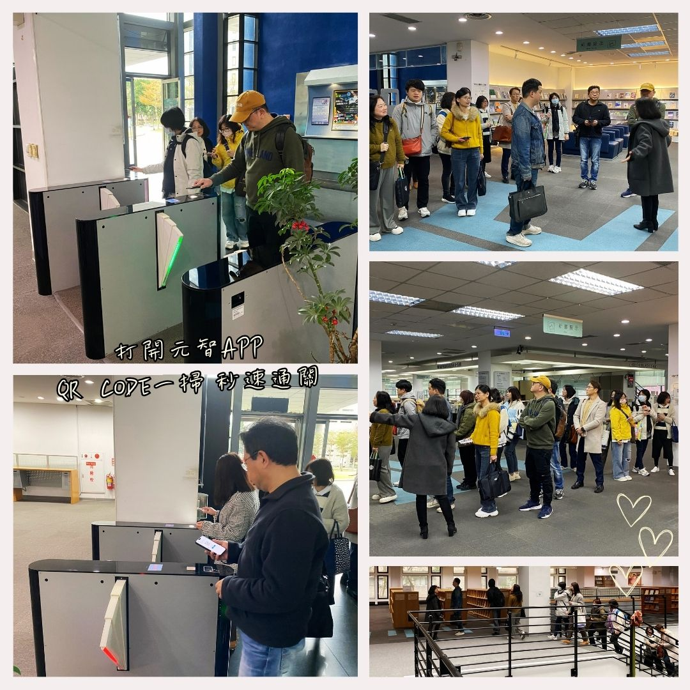

第二站：入館門禁．圖書館介紹
圖書館入館方式十分便捷，元智學生可刷學生證或使用元智APP的通行證進出與借書。
走進這道入口，您正式踏入一座歷史悠久、功能多元的智慧場域。圖書館自1989年成立，1997年遷入五館，並於2006年擴建新館，總面積約達10,000平方公尺，提供超過1,100席次的閱讀空間。
全館共分為三層樓：地下一樓設有中日西文書庫、密集書庫、研討室、中庭植栽區與枯山水禪園；一樓為借還書與參考諮詢櫃台所在，並有新書展示區、數位學習區、博碩士論文區、英文讀本專區、活力閱讀區等多功能空間；二樓則是中西文現刊與熱門雜誌的寶庫，還有繪本漫畫專區與美學展示空間。